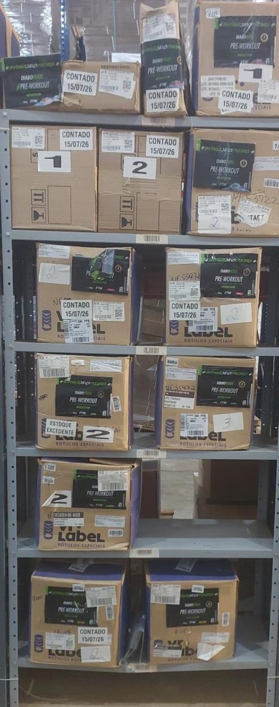

Encontre um andar
Escolha um andar para destacar e ampliar essa parte da prateleira.
VISUALIZAÇÃO
VISTA GERALPrateleira completa

Selecione um andar no menu para ampliar
Escolha um andar para destacar e ampliar essa parte da prateleira.
